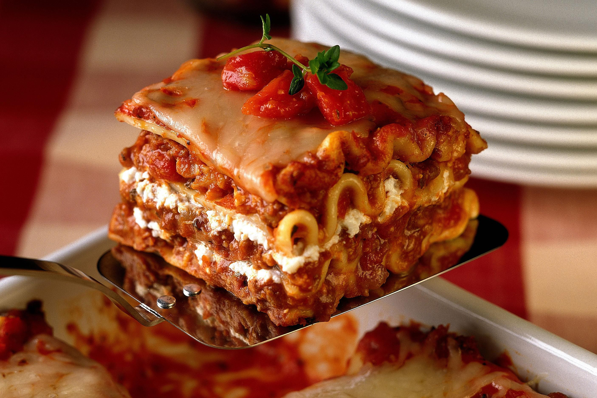

Lasagna

Lasagna is a popular Italian dish that consists of layered sheets of pasta, typically wide and flat, along with a tomato-based meat sauce, creamy cheese sauce, and sometimes vegetables, such as spinach or zucchini. The layers are typically repeated several times with a final layer of cheese on top. The dish is then baked until the cheese is melted and bubbly and the pasta is tender. Lasagna can be served hot out of the oven or reheated for leftovers, and is often served as a main course at family dinners and special occasions.
Ingredients
- 12 lasagna noodles
- 1 lb. ground beef
- 1/2 cup chopped onion
- 2 cloves garlic, minced
- 28 oz. can crushed tomatoes
- 6 oz. can tomato paste
- 2 tbsp. chopped fresh basil
- 1 tsp. dried oregano
- 1/2 tsp. salt
- 1/4 tsp. black pepper
- 15 oz. container ricotta cheese
- 2 cups shredded mozzarella cheese
- 1/2 cup grated Parmesan cheese
- 1 egg
- 2 tbsp. chopped fresh parsley
Instructions
- Preheat your oven to 375°F (190°C).
- Cook the lasagna noodles according to the package instructions until they are al dente. Drain and set aside.
- In a large skillet over medium-high heat, cook the ground beef, onion, and garlic until the beef is no longer pink and the onion is translucent.
- Stir in the crushed tomatoes, tomato paste, basil, oregano, salt, and pepper. Simmer the sauce for 15-20 minutes.
- In a medium bowl, mix together the ricotta cheese, 1 1/2 cups of the shredded mozzarella cheese, 1/4 cup of the grated Parmesan cheese, egg, and parsley.
- To assemble the lasagna, spread a thin layer of the tomato sauce on the bottom of a 9x13 inch baking dish.
- Place 3 lasagna noodles on top of the sauce, slightly overlapping.
- Spread 1/3 of the cheese mixture over the noodles.
- Spoon 1/3 of the tomato sauce over the cheese mixture.
- Repeat layers two more times.
- Sprinkle the remaining shredded mozzarella and grated Parmesan cheese over the top of the lasagna.
- Cover the dish with foil and bake for 25 minutes.
- Remove the foil and bake for an additional 25-30 minutes, or until the cheese is melted and bubbly and the lasagna is heated through.
- Let the lasagna cool for a few minutes before slicing and serving.